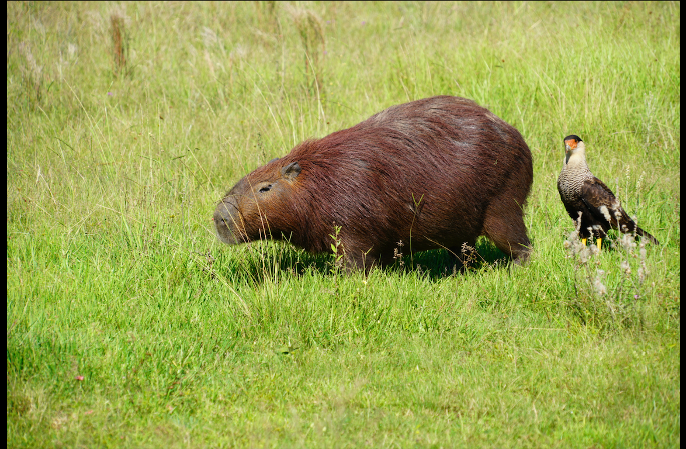
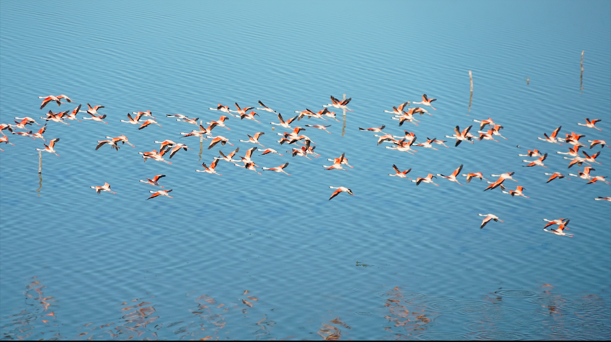
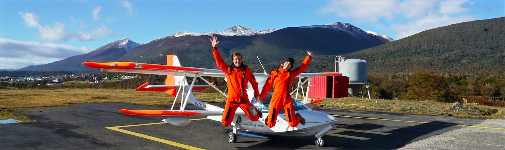

"Hola chicos" comme ils disent ici ! Figurez-vous qu'entre deux nouvelles rédigées de notre part, vous pouvez suivre notre position en direct depuis notre site internet. Et aujourd'hui, nous vous écrivons depuis Calafate, en Argentine, à l'entrée des glaciers.
Un petit retour en arrière s'impose. Au Brésil, chez Edra près de Sao Paulo, nous avons pris possession de notre nouvelle maison volante et flottante. Après un concours parmi les internautes, le design final de l'hydravion fut choisi à partir des propositions d'une classe d'élèves de primaire qui nous suit : vous avez choisi la baleine !

De là, la route nous a portés vers El Dorado, Posadas puis Mercedes, à la rencontre des "gauchos", ces fermiers à cheval qui parcourent leurs "estancias" sur des kilomètres de steppes fertiles.

Nous avons ensuite rejoint la grande ville de Rosario au bord du fleuve Parana en pleine crue, puis la ville de Carhué. Les responsables du parc naturel nous ont mandatés pour effectuer une comptabilité aérienne des flamants roses qui peuplent le lac salé Epecuen, un lac unique où les artemia salinas prospèrent dans un environnement hyper-salin.

Nous nous sommes ensuite posés dans les aéroports de St Exupéry, Trelew, Comodoro Rivadavia, Gallegos, Ushuaia, et enfin Puerto Williams, où nous avons rencontré la dernière locutrice du Yamana, la langue indigène du peuple du même nom.
À partir de maintenant, les missions scientifiques vont s'accélérer à grands pas ! Au programme : les glaciers, les montagnes enneigées, les lacs en danger de pollution, les fossiles de dinosaures, et la création de parcs naturels...
